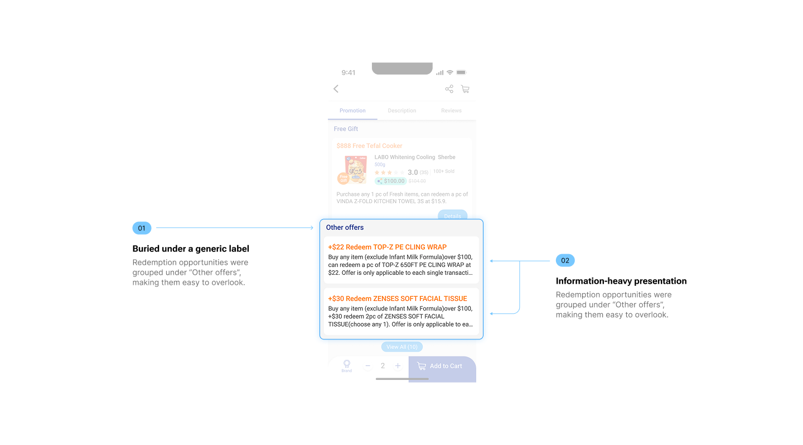
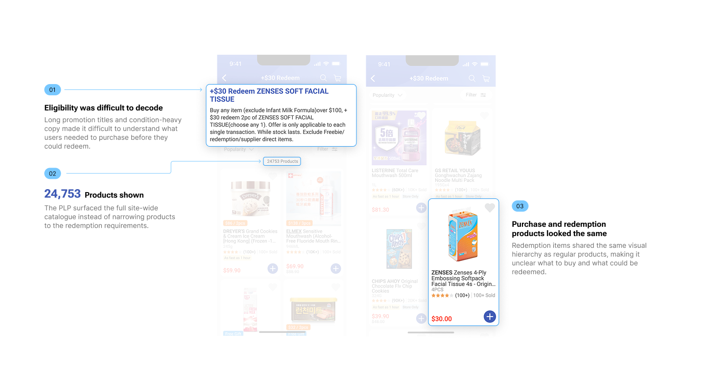
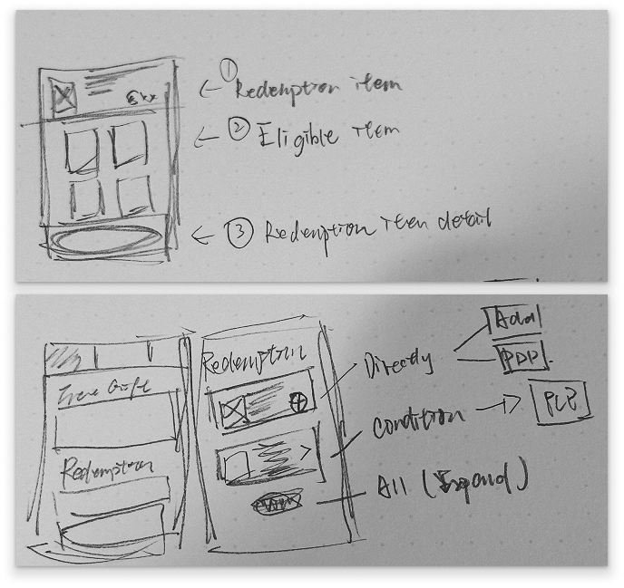
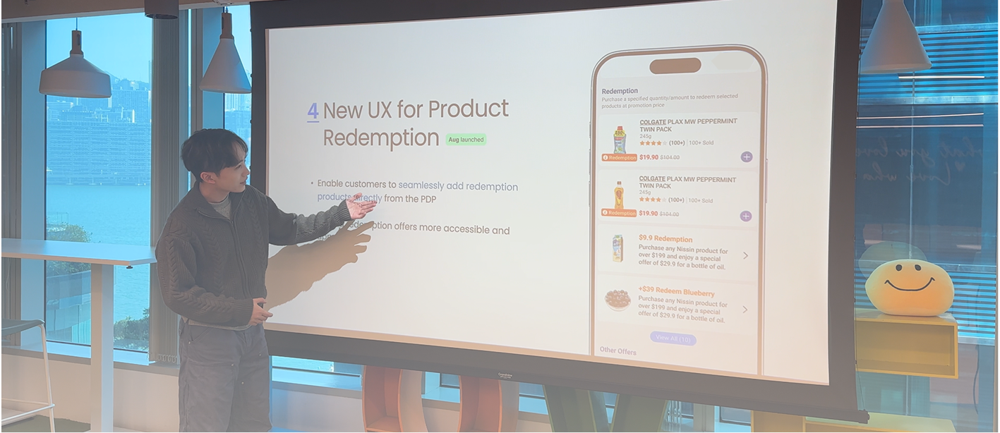
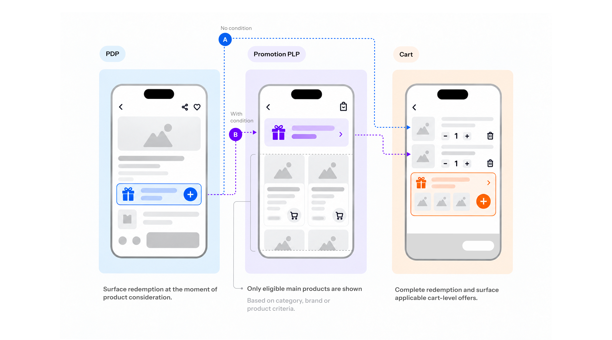
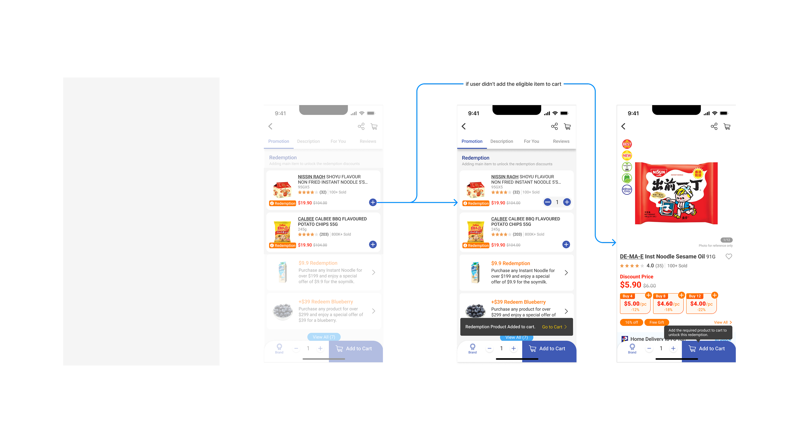
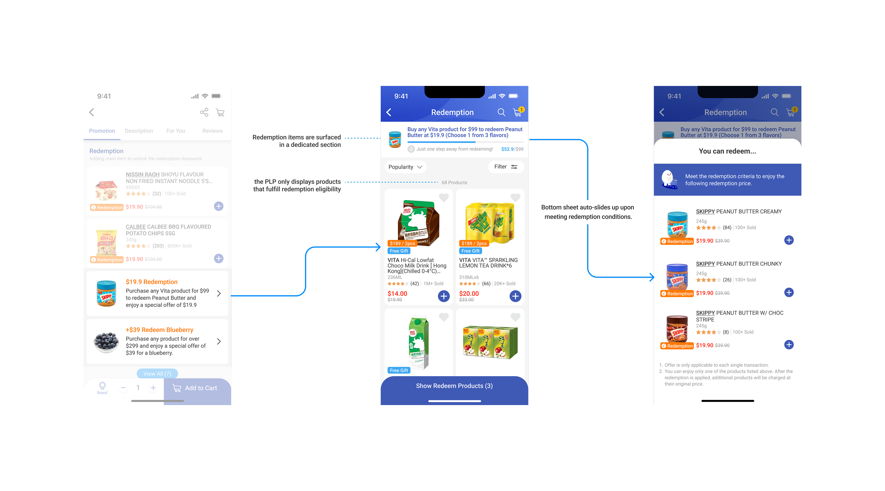
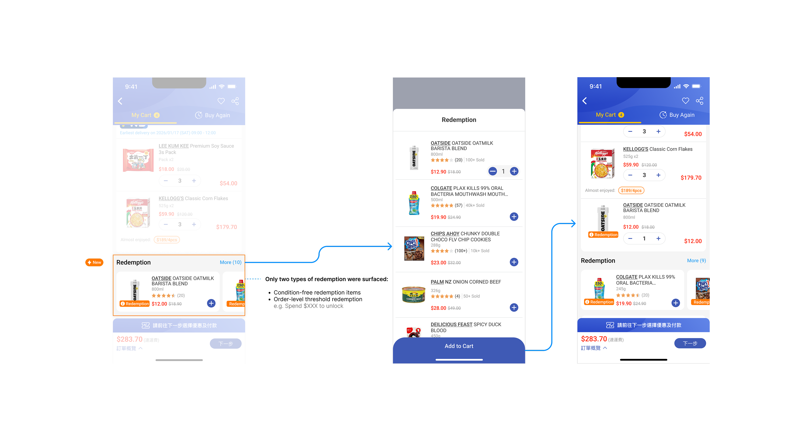

Directly add the redemption item.
- CartView and redeem
PARKnSHOP · Redemption
A funnel-led redesign that moved redemption from passive promotion content into the moments where shopping intent was already strongest.

Impact at a glance
Project-reported outcomes from the redesigned redemption journey.
The problem
Redemption existed as a separate promotion destination rather than supporting the decisions that shaped a customer’s basket.
Customers had to find eligible offers, interpret conditions and remember them later—adding effort while disconnecting redemption from shopping intent.
Redemption items recorded a lower add-to-cart rate than regular products.
Users spent unusually long on promotion pages without taking action.
On PDPs, offers were passive and text-heavy despite high purchase intent.
On PLPs, redemption competed with primary products and diluted the task.
Key observations
PDP made redemption passive at high intent; PLP made it compete with ordinary product discovery.
Problem evidence · PDP

Problem evidence · PLP

Strategic reframing
The team shifted the question from “How do we expose more offers?” to “When does redemption support the decision already being made?”
That reframing turned redemption from a destination into a contextual attachment strategy—one that could respond to intent without adding friction to checkout.
Supporting evidence · Early concept

Validation evidence · Team alignment

Design principles
Bring the opportunity into moments where the shopper is already deciding.
Keep attachment from becoming a new reason to abandon.
Separate redemption when it conflicts with primary browsing.
Redemption architecture
Rather than exposing every redemption in the same way, the system adapts to different purchase conditions and decision moments.

Directly add the redemption item.
Choose an eligible main product first.
Key design decisions
01
Product detail page

02
Product listing page

03
Cart

Key trade-off
Restructuring redemption required the team to reconcile three different definitions of the problem.
01
“If redemption underperforms, maximize visibility—show all available offers everywhere.”
02
Structural changes such as eligibility-based conditional rendering raised refactor and delivery-scope concerns.
03
Funnel evidence pointed to cognitive load and poor timing—not lack of exposure—as sources of friction and inaction.
How we resolved it
For Business
We used the available funnel evidence and observed interaction friction to challenge blanket exposure as the default response to underperformance. The opportunity was reframed from maximum exposure to smarter placement: less noise, better timing and stronger promotion relevance.
For Engineering
We proposed a phased rollout beginning with PDP so the structural change could be introduced within a contained delivery scope. Cleaner eligibility logic reduced future technical debt and made later promotion iterations easier.
Outcome of the trade-off
A phased rollout contained the initial delivery scope and reduced the cost of future iterations.
Impact & reflection
The project outcomes supported the view that placement and timing contributed to redemption underperformance. Redefining its role for contextual attachment delivered +36% promotion sales and 23.8% redemption ATC CVR.
The result reinforced the strategy: alignment across timing, placement and user intent can create sustainable conversion without adding pressure to the checkout journey.